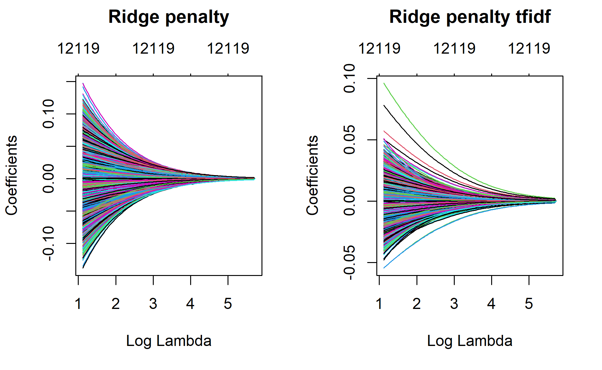
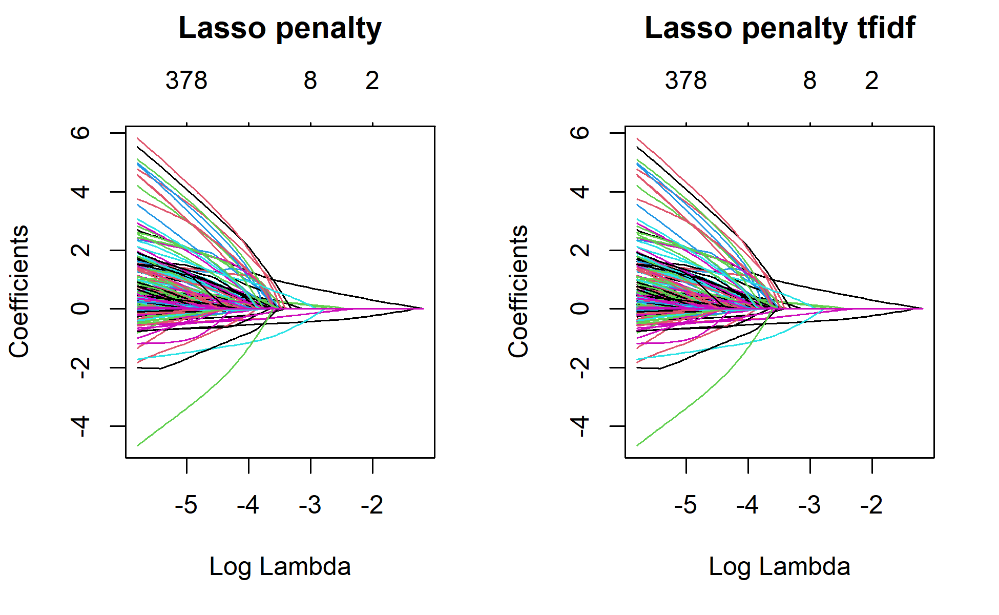
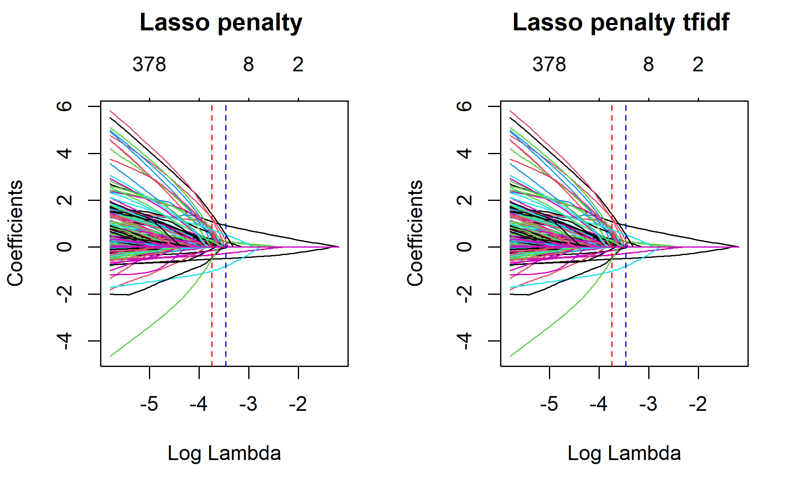
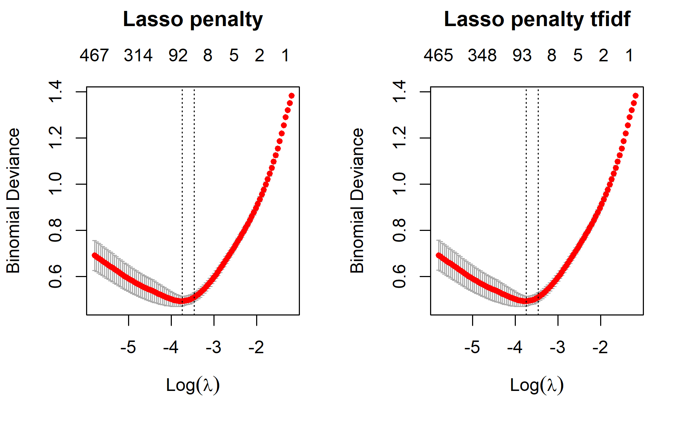
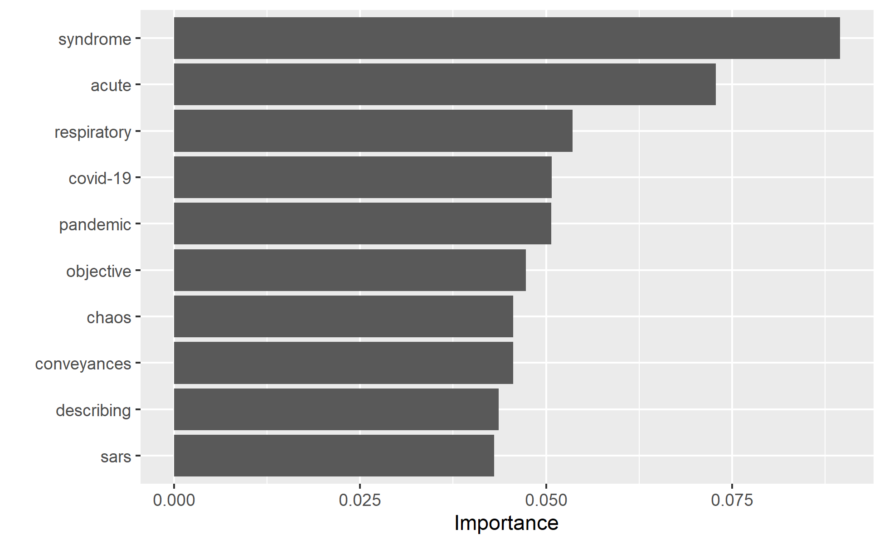

Introduction
Classifying documents to a certain list of categories can provide valuable insights and possibly make the documents more manageable. Document classification is one of the application areas of machine learning. Natural Language Processing(NLP) and machine learning methods can be used to automate classification of documents such as emails(ham/spam categories), articles, books, response to survey questions, sentiments, product reviews(negative/positive), etc.
There are handful of very good algorithms that can automagically handle text data. In this blog post, I would like to experiment regularized logistic regression machine learning models for classifying abstracts.
I am interested in predicting abstracts that will fall into “SARS_2003” and “COVID_19” categories. For this task, I will use the same data sets that I have used in my previous blog posts. I saved the references files in excel from my previous post. I will simply load this excel file and play with the abstract using qunateda and glmnet packages. 😍
Data
I load the data and see a summary of number of characters used to write the abstracts. For this analysis, I will use only abstracts having 200 characters. I will just filter out the abstracts on the lower side of the extreme.
Check number of covid/sars papers
The covid abstracts were originally labeled as “included” and sars abstracts as “excluded”. I will simply create a category variable and change the labels to “covid” or “sars”. About 52% of the abstracts have “covid” labels the remaining is “sars”.
covid_sars$category <- covid_sars$Include
covid_sars$category[covid_sars$category=="included"]<-"covid"
covid_sars$category[covid_sars$category=="not included"]<-"sars"
table(covid_sars$category)
covid sars
506 464 round(table(covid_sars$category) %>% prop.table()*100, 1)
covid sars
52.2 47.8 Split the data
Before we do any steps in a text analysis, it is recommended to split the data. Splitting the data after tokenization is not a good approach. So, we will instead split the data into train and test set, tokenize the train and test sets separately, build models, match the variables of the test data set with the train. Finally, we will predict the test data and then evaluate our predictions.
library(caret) #For splitting
set.seed(1234)
trainIndex <- createDataPartition(covid_sars$category, p = .8,
list = FALSE,
times = 1)
train <- covid_sars[trainIndex,]
test <- covid_sars[-trainIndex,]
table(train$category)
covid sars
405 372 table(test$category)
covid sars
101 92 nrow(train)
[1] 777Text analysis
If you are interested in text analysis, I reccommend visiting Quanteda website. Quanteda is a great package for text analysis. One of the great advantage of quanteda is it is super fast, have so many powerful functions. I have tried five different R packages for text data. Based on my personal taste, I would rank them as follows: Quanteda, txt2vec, tidytext, tm.
Create Corpus
require(quanteda)
#Train data
tr <- train[, 6] # the sixth variable is unique label. I will use it as identifier.
traincorpus <- corpus(train$abstract,
docvars = data.frame(trainvars=names(tr)))
#Test data
ts <- test[, 6]
testcorpus <- corpus(test$abstract,
docvars = data.frame(testvars=names(ts)))
summary(traincorpus,2)
Corpus consisting of 777 documents, showing 2 documents:
Text Types Tokens Sentences trainvars
text1 165 337 11 label
text2 94 164 5 label# Connect the labels with the corpuses
docid_train <- train$label
docnames(traincorpus) <- docid_train
head(traincorpus,1)
Corpus consisting of 1 document and 1 docvar.
Ataguba2020 :
"The coronavirus disease 2019 (COVID-19) pandemic has affecte..."Corpus consisting of 193 documents, showing 2 documents:
Text Types Tokens Sentences testvars
Coccia2020 264 782 12 label
Cagliani2020 182 337 16 labelsummary(traincorpus, 4)
Corpus consisting of 777 documents, showing 4 documents:
Text Types Tokens Sentences trainvars
Ataguba2020 165 337 11 label
Sigala2020 94 164 5 label
Lechner2020 103 160 7 label
Okba2020 118 176 6 labelTokenize
traintokens <- tokens(traincorpus,
remove_punct = TRUE,
remove_url = TRUE,
remove_numbers = TRUE)
traintokens <- tokens_remove(traintokens,
pattern=stopwords('en'))
testtokens <- tokens(testcorpus,
remove_punct = TRUE,
remove_url = TRUE,
remove_numbers = TRUE)
testtokens <- tokens_remove(testtokens,
pattern=stopwords('en'))
Construct the DFM objects
Document-feature matrix of: 2 documents, 12,119 features (99.2% sparse) and 1 docvar.
features
docs coronavirus disease covid-19 pandemic affected many
Ataguba2020 2 2 6 3 1 7
Sigala2020 0 0 4 1 0 0
features
docs countries increasing morbidity mortality
Ataguba2020 7 1 2 1
Sigala2020 0 0 0 0
[ reached max_nfeat ... 12,109 more features ]head(dfmat_test,2)
Document-feature matrix of: 2 documents, 5,484 features (97.0% sparse) and 1 docvar.
features
docs study two goals first explain geo-environmental
Coccia2020 3 1 1 1 1 1
Cagliani2020 0 0 0 0 0 0
features
docs determinants accelerated diffusion covid-19
Coccia2020 1 3 3 9
Cagliani2020 0 0 0 0
[ reached max_nfeat ... 5,474 more features ]The training data has 12,119 features and is 99.2% sparse, while the test data has 5,484 features and 97% sparsity. I will not do anything to reduce the sparsity. But, you may have to do it if you have a large number of observations. Quanteda’s dfm_trim() can do that for you.
TF-IDF weighting is known to improve prediction performance. I will use that here too.
Let’s inspect the two tfidf data that were created above.
head(dfmat_train_tfidf, 2)
Document-feature matrix of: 2 documents, 12,119 features (99.2% sparse) and 1 docvar.
features
docs coronavirus disease covid-19 pandemic affected
Ataguba2020 0.86811 0.8990239 2.287311 1.8627242 1.182851
Sigala2020 0 0 1.524874 0.6209081 0
features
docs many countries increasing morbidity mortality
Ataguba2020 7.450424 6.911317 1.475448 3.319944 1.126993
Sigala2020 0 0 0 0 0
[ reached max_nfeat ... 12,109 more features ]head(dfmat_test_tfidf,2)
Document-feature matrix of: 2 documents, 5,484 features (97.0% sparse) and 1 docvar.
features
docs study two goals first explain
Coccia2020 1.659491 0.870584 1.808436 0.7057737 1.984527
Cagliani2020 0 0 0 0 0
features
docs geo-environmental determinants accelerated diffusion
Coccia2020 2.285557 2.285557 5.953582 5.425308
Cagliani2020 0 0 0 0
features
docs covid-19
Coccia2020 3.642693
Cagliani2020 0
[ reached max_nfeat ... 5,474 more features ]Model building
Why not logistic regression?
My data has two class labels(covid vs sars) and all numerical features. Why not logistic regression, then? Well, linear models provide great approaches to predictive modeling given that the assumptions are met! These assumptions (for example: hemoscidascity of variance) are violated when we have more number of features than observations (For example in genetics studies and text analysis, this is often the case). Applying linear models to such data results in biased coefficients, weaker prediction performance scores, overfitting or high out of sample prediction error problems. Hence, penalizing the estimated model coefficients was devised. This method of penalizing linear models is called “Regularization”. There are three most commonly used approaches to regularization for logistic regression: Ridge, LASSO, and Elastic net.
In Ridge penalty, the estimated model coefficients are penalized by adding the following parameter. SSE \[\begin{equation} \ SSE = \sum^n_{i=1} \left(y_i - \hat{y}_i\right)^2 \end{equation}\]
\[\begin{equation} \ SSE + \lambda \sum^p_{j=1} \beta_j^2 \ \end{equation}\]
This is called L^2 norm. From the above equation if lambda equals 0, the model will be equal to the ordinary least squares model. As approaches to infinity, the penalty will force the model coefficients to be closer to zero but not completely to 0. Ridge penalty is known to systematically handling highly correlated features. In Lasso penalty the model coefficients are penalized by a L1 norm as follows. \[\begin{equation}SSE + \lambda \sum^p_{j=1} | \beta_j | \end{equation}\]
Lasso penalty unlike ridge pushes all the coefficients all the way to zero. The advantage of Lasso is it improves model performance while also automating feature selection. Only the features that are important will be retianed on the final model.
Elastic net combines both Lasso and Ridge penalty parameters. Elastic net takes advantages of both Lasso and Ridge penalty: effective regularization by automated feature selection as well as effectively handling correlated features.
Implementations
Probably the most popular package to implement regualrized models is the glmnet package. This package is lightening fast to tune cross validated models. I watched one very nice webinar tutorial from Dr Trevor Hastie(one of the authors of this package). He mentioned that it is fast because it is programmed in Fortran. I invite you to watch that great webinar here I head I heard there are also other packages like H2O and elastic net. I have never tried any of them.
For regularized models, we have two main tuning parameters: alpha and lambda. In ridge and Lasso the lambda is the only tuning parameter but alpha is set to be 0 and 1, respectively. For tuning lambda, the cv.glmnet() function provides 100 different data driven lambda values and there is no need to do anything else. Since elastic net combines both Lasso and Ridge penalty, we will have two tuning parameters: alpha and lambda. Alpha can take a number values between between 0 and 1, while lambda can have 100 different data driven lambda values by just using cv.glmnet() function.
All models require the data to be in a matrix form. The good thing with quanteda is the document feature matrix is already a matrix object we don’t need to change the structure of our data. Notice the time required to tune the cross-validated algorithms.
Ridge
# Ridge regression
library(glmnet)
ridge_1 <- glmnet(x = dfmat_train, y = train$category,
alpha = 0, family = "binomial")
#tfidf
ridge_1_tfidf <- glmnet(x = dfmat_train_tfidf, y = train$category,
alpha = 0, family = "binomial")
par(mfrow = c(1, 2))
plot(ridge_1, xvar="lambda", main="Ridge penalty\n\n")
plot(ridge_1_tfidf, xvar="lambda", main="Ridge penalty tfidf\n\n")

Again using the tf-idf weighted data
set.seed(123)
ridge_min_tfidf <- cv.glmnet(x=dfmat_train_tfidf,
y=train$category,
family="binomial",
alpha=0, # alpha = 0 for ridge regression
parallel=TRUE,
intercept=TRUE)
par(mfrow = c(1, 2))
plot(ridge_min, main="Ridge penalty\n\n")
plot(ridge_min_tfidf, main="Ridge penalty_tfidf\n\n")
Sys.time() - x
Time difference of 23.83476 secsLet’s plot the results
par(mfrow = c(1, 2))
plot(ridge_1, xvar = "lambda", main = "Ridge penalty\n\n")
abline(v=log(ridge_min$lambda.min), col = "red", lty = "dashed")
abline(v=log(ridge_min$lambda.1se), col = "blue", lty = "dashed")
plot(ridge_1_tfidf, xvar = "lambda", main = "Ridge penalty tfidf\n\n")
abline(v=log(ridge_min_tfidf$lambda.min), col = "red", lty = "dashed")
abline(v=log(ridge_min_tfidf$lambda.1se), col = "blue", lty = "dashed")

Predict the test data sets
Before we predict the test data, we need to do one very key step. We will predict the test data based on the data that the model was trained. So, features on the test data should match with the features on the training data. Otherwise, the prediction will not work. The model cannot understand anything outside of the features that were in the training data. This is very key step in text prediction. Quanteda provides a nice function for that: dfm_match(). It subsets the features of the test data that were part of the training data.
For prediction, I will use the best model from the cross validated models. The best model lies between the model having the minimum lamda value and the model that has a lambda value within 1 se. Here, I will use the minimum lamda value.
# Predict
ridge_min
Call: cv.glmnet(x = dfmat_train, y = train$category, parallel = TRUE, family = "binomial", alpha = 0, intercept = TRUE)
Measure: Binomial Deviance
Lambda Measure SE Nonzero
min 3.060 1.023 0.01754 12119
1se 3.518 1.040 0.01666 12119ridge_min$lambda.1se
[1] 3.518117ridge_min$lambda.min
[1] 3.059879actual_class <- as.factor(test$category)
predicted_class.ridge <- predict(ridge_min, newx=dfmat_matched,s="lambda.min", type="class")
tab_class.ridge <- table(predicted_class.ridge, actual_class)
confusionmatrix_ridge <- confusionMatrix(tab_class.ridge, mode="everything", positive="covid")
##tfidf
ridge_min_tfidf
Call: cv.glmnet(x = dfmat_train_tfidf, y = train$category, parallel = TRUE, family = "binomial", alpha = 0, intercept = TRUE)
Measure: Binomial Deviance
Lambda Measure SE Nonzero
min 3.060 1.023 0.01754 12119
1se 3.518 1.040 0.01666 12119ridge_min_tfidf$lambda.1se
[1] 3.518117ridge_min_tfidf$lambda.min
[1] 3.059879actual_class_tfidf <- as.factor(test$category)
predicted_class.ridge_tfidf <- predict(ridge_min_tfidf, newx=dfmat_matched_tfidf, s="lambda.min", type="class")
tab_class.ridge_tfidf <- table(predicted_class.ridge_tfidf, actual_class)
confusionmatrix_ridge_tfidf <- confusionMatrix(tab_class.ridge_tfidf, mode="everything", positive="covid")
confusionmatrix_ridge
Confusion Matrix and Statistics
actual_class
predicted_class.ridge covid sars
covid 85 17
sars 16 75
Accuracy : 0.829
95% CI : (0.7683, 0.8793)
No Information Rate : 0.5233
P-Value [Acc > NIR] : <2e-16
Kappa : 0.6571
Mcnemar's Test P-Value : 1
Sensitivity : 0.8416
Specificity : 0.8152
Pos Pred Value : 0.8333
Neg Pred Value : 0.8242
Precision : 0.8333
Recall : 0.8416
F1 : 0.8374
Prevalence : 0.5233
Detection Rate : 0.4404
Detection Prevalence : 0.5285
Balanced Accuracy : 0.8284
'Positive' Class : covid
confusionmatrix_ridge_tfidf
Confusion Matrix and Statistics
actual_class
predicted_class.ridge_tfidf covid sars
covid 86 17
sars 15 75
Accuracy : 0.8342
95% CI : (0.7741, 0.8837)
No Information Rate : 0.5233
P-Value [Acc > NIR] : <2e-16
Kappa : 0.6673
Mcnemar's Test P-Value : 0.8597
Sensitivity : 0.8515
Specificity : 0.8152
Pos Pred Value : 0.8350
Neg Pred Value : 0.8333
Precision : 0.8350
Recall : 0.8515
F1 : 0.8431
Prevalence : 0.5233
Detection Rate : 0.4456
Detection Prevalence : 0.5337
Balanced Accuracy : 0.8334
'Positive' Class : covid
See, all features are retained in the final models. Looking at the prediction performances of the two, we can see that the tfidf-weighted data has better performance. We will try Lasso if we can improve that.
Lasso penalty
## Lasso model
lasso_1 <- glmnet(x = dfmat_train, y = train$category,
alpha = 1, family = "binomial", type.measure="class")
lasso_1_tfidf <- glmnet(x = dfmat_train, y = train$category,
alpha = 1, family = "binomial", type.measure="class")
par(mfrow=c(1,2))
plot(lasso_1, xvar="lambda", main="Lasso penalty\n\n")
plot(lasso_1_tfidf, xvar="lambda", main="Lasso penalty tfidf\n\n")

x <- Sys.time()
#registerDoMC(cores=2) # parallelize to speed up
set.seed(123)
lasso <- cv.glmnet(x=dfmat_train,
y=train$category,
family="binomial",
alpha=1, # alpha = 1: LASSO
parallel=TRUE, nfolds = 10,
intercept=TRUE)
# tfidf
set.seed(123)
lasso_tfidf <- cv.glmnet(x=dfmat_train_tfidf,
y=train$category,
family="binomial",
alpha=1, # alpha = 1: LASSO
parallel=TRUE, nfolds = 10,
intercept=TRUE)
Sys.time() -x
Time difference of 5.816915 secslasso
Call: cv.glmnet(x = dfmat_train, y = train$category, nfolds = 10, parallel = TRUE, family = "binomial", alpha = 1, intercept = TRUE)
Measure: Binomial Deviance
Lambda Measure SE Nonzero
min 0.02369 0.4939 0.02139 65
1se 0.03132 0.5107 0.01893 16lasso_tfidf
Call: cv.glmnet(x = dfmat_train_tfidf, y = train$category, nfolds = 10, parallel = TRUE, family = "binomial", alpha = 1, intercept = TRUE)
Measure: Binomial Deviance
Lambda Measure SE Nonzero
min 0.02369 0.4939 0.02139 69
1se 0.03132 0.5107 0.01893 16# Plot lasso without cv and with cv to mark lamda.min and lamda.1se
par(mfrow=c(1,2))
plot(lasso_1, xvar="lambda", main="Lasso penalty \n\n")
abline(v=log(lasso$lambda.min), col="red", lty="dashed")
abline(v=log(lasso$lambda.1se), col="blue", lty="dashed")
plot(lasso_1_tfidf, xvar="lambda", main="Lasso penalty tfidf \n\n")
abline(v=log(lasso_tfidf$lambda.min), col="red", lty="dashed")
abline(v=log(lasso_tfidf$lambda.1se), col="blue", lty="dashed")

par(mfrow=c(1,2))
plot(lasso,main="Lasso penalty\n\n")
plot(lasso_tfidf,main="Lasso penalty tfidf\n\n")

# Predict
lasso
Call: cv.glmnet(x = dfmat_train, y = train$category, nfolds = 10, parallel = TRUE, family = "binomial", alpha = 1, intercept = TRUE)
Measure: Binomial Deviance
Lambda Measure SE Nonzero
min 0.02369 0.4939 0.02139 65
1se 0.03132 0.5107 0.01893 16lasso_tfidf
Call: cv.glmnet(x = dfmat_train_tfidf, y = train$category, nfolds = 10, parallel = TRUE, family = "binomial", alpha = 1, intercept = TRUE)
Measure: Binomial Deviance
Lambda Measure SE Nonzero
min 0.02369 0.4939 0.02139 69
1se 0.03132 0.5107 0.01893 16lasso$lambda.1se
[1] 0.03131881lasso$lambda.min
[1] 0.02369153actual_class <- as.factor(test$category)
predicted_class.lasso <- predict(lasso, newx=dfmat_matched,s="lambda.min", type="class")
tab_class.lasso <- table(predicted_class.lasso, actual_class)
confusion_matrix_lasso <- confusionMatrix(tab_class.lasso, mode="everything", positive="covid")
##tfidf
lasso_tfidf$lambda.1se
[1] 0.03131881lasso_tfidf$lambda.min
[1] 0.02369153actual_class_tfidf <- as.factor(test$category)
predicted_class.lasso_tfidf <- predict(lasso_tfidf,
newx=dfmat_matched_tfidf,s="lambda.min",
type="class")
tab_class.lasso_tfidf <- table(predicted_class.lasso_tfidf, actual_class)
confusion_matrix_lasso_tfidf <- confusionMatrix(tab_class.lasso_tfidf, mode="everything", positive="covid")
confusion_matrix_lasso
Confusion Matrix and Statistics
actual_class
predicted_class.lasso covid sars
covid 100 11
sars 1 81
Accuracy : 0.9378
95% CI : (0.8939, 0.9675)
No Information Rate : 0.5233
P-Value [Acc > NIR] : < 2.2e-16
Kappa : 0.8748
Mcnemar's Test P-Value : 0.009375
Sensitivity : 0.9901
Specificity : 0.8804
Pos Pred Value : 0.9009
Neg Pred Value : 0.9878
Precision : 0.9009
Recall : 0.9901
F1 : 0.9434
Prevalence : 0.5233
Detection Rate : 0.5181
Detection Prevalence : 0.5751
Balanced Accuracy : 0.9353
'Positive' Class : covid
confusion_matrix_lasso_tfidf
Confusion Matrix and Statistics
actual_class
predicted_class.lasso_tfidf covid sars
covid 100 11
sars 1 81
Accuracy : 0.9378
95% CI : (0.8939, 0.9675)
No Information Rate : 0.5233
P-Value [Acc > NIR] : < 2.2e-16
Kappa : 0.8748
Mcnemar's Test P-Value : 0.009375
Sensitivity : 0.9901
Specificity : 0.8804
Pos Pred Value : 0.9009
Neg Pred Value : 0.9878
Precision : 0.9009
Recall : 0.9901
F1 : 0.9434
Prevalence : 0.5233
Detection Rate : 0.5181
Detection Prevalence : 0.5751
Balanced Accuracy : 0.9353
'Positive' Class : covid
The best model in the end retains 65 variables. If we used tf-idf weighting, the best model retains 69 of the 1219 variables. That is great way to reduce the irrelevant features. We can have a look at some of these variables using the vippackage. VIP ranks based on their importance scores.
Let’s see if this this variables are also the main features in the ridge model.
vip(ridge_min_tfidf, 10)

Elastic net
In my experience with text data, I found elastic net regression having problems with the matrix format of the dfm objects resulted from quanteda. I will have to convert the matrix formats to data frames.
ncol(dfmat_train)
[1] 12119ncol(da_train)
[1] 12121da_train <- da_train[,-2] #the document identifier variable should be removed
ncol(da_train)
[1] 12120## The tfidf version
ncol(dfmat_train_tfidf)
[1] 12119ncol(da_train_tfidf)
[1] 12121da_train_tfidf <- da_train_tfidf[,-2] #the document identifier variable should be removed
ncol(da_train_tfidf)
[1] 12120da_train_xmatrix <- da_train[,-1] %>% as.data.frame() %>% as.matrix()
da_train_xdf <- da_train %>% as.data.frame()
#for the tf-idf pre-processed data
da_train_xmatrix_tfidf <- da_train_tfidf[,-1] %>% as.data.frame() %>% as.matrix()
da_train_xdf_tfidf <- da_train_tfidf %>% as.data.frame()
da_test_match <- cbind(category=test$category, convert(dfmat_matched, to="data.frame"))
da_test_match <- da_test_match[,-2]
ncol(da_test_match)
[1] 12120da_test_xmatrix <- da_test_match[,-1] %>% as.data.frame() %>% as.matrix()
ncol(dfmat_matched)
[1] 12119ncol(da_test_xmatrix)
[1] 12119# Do the same for the tfidf data
da_test_match_tfidf <- cbind(category=test$category, convert(dfmat_matched_tfidf, to="data.frame"))
da_test_match_tfidf <- da_test_match_tfidf[,-2] #the document identifier variable should be removed
ncol(da_test_match_tfidf)
[1] 12120da_test_xmatrix_tfidf <- da_test_match_tfidf[,-1] %>% as.data.frame() %>% as.matrix() # remove the dependent variable
ncol(dfmat_matched_tfidf)
[1] 12119ncol(da_test_xmatrix_tfidf)
[1] 12119# Fit elastic net regression with 10 different alpha values from 0 to 1
x <- Sys.time()
set.seed(223)
y=ifelse(da_train_xdf$category=="covid", "1", "0") # convert to numeric labels
cv_glmnet_10_roc <- train(x = da_train_xdf[,-1],
y = y, type.measure="auc", method="glmnet",
family="binomial",
traControl=trainControl(method="cv", number=10),
parallel=TRUE,
tuneLength=10) # I will use 10 different alpha values between 0 and 1
x-Sys.time()
Time difference of -24.38943 mins#tfidf
x <- Sys.time()
set.seed(223)
cv_glmnet_10_roc_tfidf <- train(x = da_train_xdf_tfidf[,-1],
y = y, type.measure="auc", method="glmnet",
family="binomial",
traControl=trainControl(method="cv",number=10),
parallel=TRUE,
tuneLength=10)
x-Sys.time()
Time difference of -16.83805 mins## Predict using the belastic model cv_glmnet_50
predicted_class.elastic_10 <- predict(cv_glmnet_10_roc,
da_test_xmatrix,
cv_glmnet_10_roc$lamda.min, type="raw")
predicted_class.elastic_10 <- as.factor(ifelse(predicted_class.elastic_10==0,
"sars", "covid"))
confusion_mat_elastic_net <- confusionMatrix(predicted_class.elastic_10,
actual_class, mode="everything",
positive="covid")
#Predict the tfidf weighted data
predicted_class.elastic_10_tfidf <- predict(cv_glmnet_10_roc_tfidf,
da_test_xmatrix_tfidf,
cv_glmnet_10_tfidf$lamda.min,
type="raw")
predicted_class.elastic_10_tfidf <- as.factor(ifelse(predicted_class.elastic_10_tfidf==0, "sars", "covid"))
confusion_mat_elastic_net_tfidf <- confusionMatrix(predicted_class.elastic_10_tfidf,
actual_class,
mode="everything", positive="covid")
confusion_mat_elastic_net
Confusion Matrix and Statistics
Reference
Prediction covid sars
covid 100 11
sars 1 81
Accuracy : 0.9378
95% CI : (0.8939, 0.9675)
No Information Rate : 0.5233
P-Value [Acc > NIR] : < 2.2e-16
Kappa : 0.8748
Mcnemar's Test P-Value : 0.009375
Sensitivity : 0.9901
Specificity : 0.8804
Pos Pred Value : 0.9009
Neg Pred Value : 0.9878
Precision : 0.9009
Recall : 0.9901
F1 : 0.9434
Prevalence : 0.5233
Detection Rate : 0.5181
Detection Prevalence : 0.5751
Balanced Accuracy : 0.9353
'Positive' Class : covid
confusion_mat_elastic_net_tfidf
Confusion Matrix and Statistics
Reference
Prediction covid sars
covid 100 11
sars 1 81
Accuracy : 0.9378
95% CI : (0.8939, 0.9675)
No Information Rate : 0.5233
P-Value [Acc > NIR] : < 2.2e-16
Kappa : 0.8748
Mcnemar's Test P-Value : 0.009375
Sensitivity : 0.9901
Specificity : 0.8804
Pos Pred Value : 0.9009
Neg Pred Value : 0.9878
Precision : 0.9009
Recall : 0.9901
F1 : 0.9434
Prevalence : 0.5233
Detection Rate : 0.5181
Detection Prevalence : 0.5751
Balanced Accuracy : 0.9353
'Positive' Class : covid
Final remarks
Notice, Lasso and Elastic net models gave us superior prediction performances. A model with a sensitivity of 99%, and a specificity of 88%, and precision of more than 90% is extraordinarily superior to me! Sensitivity and specificity are not affected by prevalence. But, precision(positive predictive value) and negative predictive values are influenced by prevalence.It is possible to calculate confidence intervals for sensitivity and specificity. But, I will not do that here. Since the prevalence of covid abstracts is high(52%), the precission of my predictive models are all high. This may not be the case if your model is dealing with rare cases.
This book by Bradley Boehmke & Brandon Greenwell is a good reference to learn about machine learning. It is freely available. But, you can also buy a hard copy. It is one of my favorite machine learning books.
Contact